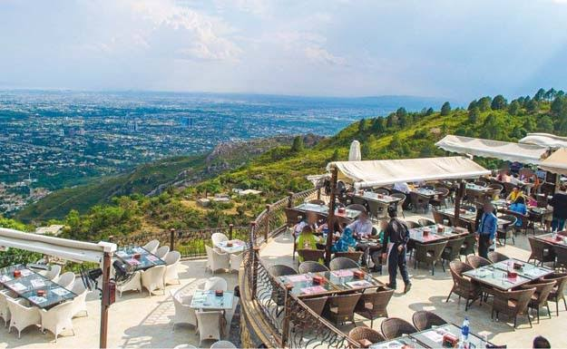

Monal
Exploring Islamabad with college friends, we embarked on an adventure to the iconic Faisal Masjid and enjoyed a delightful dinner at the picturesque Monal Restaurant. The panoramic views from Monal and the serene ambiance of Faisal Masjid added a touch of magic to our Islamabad experience. Monal Restaurant's scenic beauty captivated us, while Faisal Masjid provided a serene moment of contemplation.